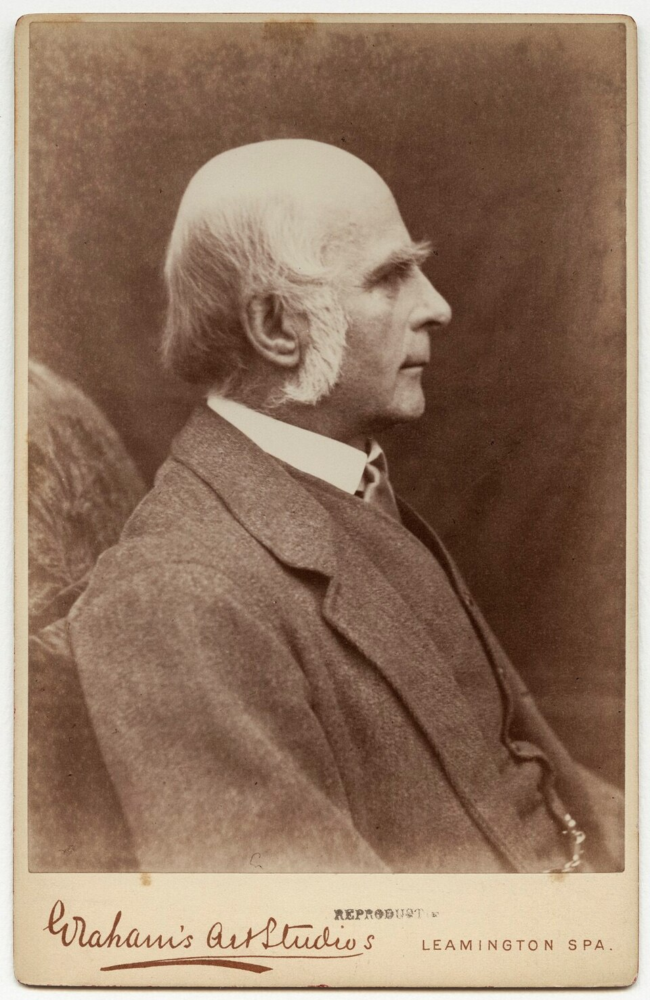
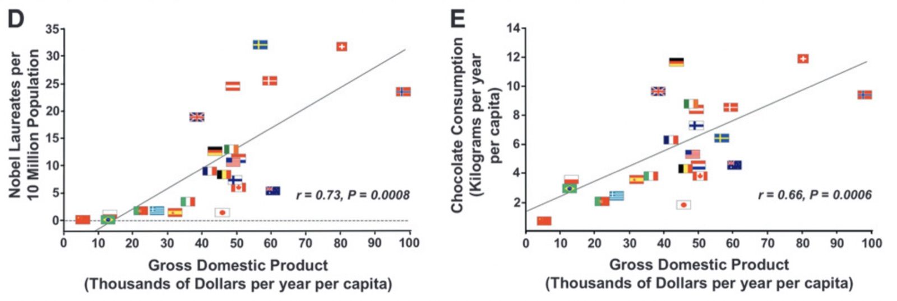

그림 · 초콜릿 소비량과 노벨상 수상자 수
23개국, 상관계수 0.79

Messerli(2012) · 그림: EU 데이터 시각화 가이드
산점도 위 가장 잘 맞는 직선으로 관측되지 않은 값을 예측
상관계수는 상관관계의 강도와 방향을 나타내는 정량적인 단위로, 값의 범위는 −1부터 +1 까지이다
두 속성이 함께 변하는 정도를 수치 하나로
두 가지 이상의 속성 사이에 선 모양의 관계가 있다고 가정하고 데이터를 가장 잘 대표하는 선을 찾는 분석 방법
상관은 관계의 정도, 회귀는 직선으로 요약해 예측
| 단계 | 도구 | 묻는 말 |
|---|---|---|
| ①산점도 | 점 그래프 | 함께 움직이는 모양이 보이는가 |
| ②상관계수 | −1 ~ +1 | 얼마나 강한가, 방향은 |
| ③회귀선 | 가장 잘 맞는 직선 | 새 값을 예측하면 얼마인가 |
관계가 선 모양이라는 판단이 선 뒤에 직선
직선을 긋는 계산에 왜 되돌아감이라는 이름인가

사진: 1890년경, 위키미디어 공용
데이터의 관계를 선으로 요약해 값을 예측하는 방법 전체
평균으로 되돌아가는 현상은 지금도 '평균으로의 회귀'라 부름. 예: 시험을 유난히 잘 본 다음 평소 점수
| 사례 | 관찰된 상관 | 실제로는 |
|---|---|---|
| 초콜릿 소비량과 노벨상 수상자 수 | 23개국에서 0.79 | 국가의 소득 수준이 두 값 모두와 관련 |
| 소방관 수와 화재 피해액 | 많이 출동할수록 피해액 큼 | 원인은 화재 규모, 방향이 반대 |
| 흡연과 폐암 | 1950년대 보고 | 검증을 거쳐 1964년 원인으로 인정 |
상관은 원인을 찾는 출발점, 증거는 아님
Messerli(2012) · 그림: EU 데이터 시각화 가이드

왼쪽: 국민소득과 노벨상 수상자 수 · 오른쪽: 국민소득과 초콜릿 소비량 · 둘 다 양의 상관 · EU 데이터 시각화 가이드
연도-기온 직선의 기울기 × 100 = 100년에 몇 도
예측하려는 값이 종속 변수, 예측에 쓰는 값이 독립 변수. 연도가 독립, 연평균기온이 종속
실젯값과 예측값의 차이가 작은 쪽을 고른다
그 차이 = 오차. 오차가 가장 작은 기울기·편향 조합을 찾는 계산 = 학습
오차 판정 원리는 8차시 손계산
100여 년의 기록이 숫자 두 개로
사진: 쿠퍼 휴잇 박물관의 건축 모형, 위키미디어 공용
| 단계 | 하는 일 | 오늘의 경우 |
|---|---|---|
| ①형태 정하기 | 관계를 어떤 모양으로 요약할지 | 직선 하나 |
| ②학습 | 데이터에 가장 잘 맞는 숫자 찾기 | 오차가 가장 작은 기울기와 편향 |
| ③평가 | 얼마나 믿을 수 있는지 재기 | 예측값과 실젯값의 차이 |
교과서 14쪽 6단계 가운데 네 번째 모델링하기, 다섯 번째 모델 평가하기, 여섯 번째 모델 활용하기
| 낱말 | 무엇을 가리키나 | 오늘의 경우 |
|---|---|---|
| 기계학습 | 데이터에서 규칙을 찾는 방법 전체 | 직선의 숫자를 계산이 찾게 한 방식 |
| 학습 | 모델을 이루는 숫자를 찾는 계산 | 오차가 가장 작아지는 기울기와 편향 |
| 모델 | 학습이 끝나고 남는 결과물 | 기울기와 편향으로 정해진 직선 |
예전: 사람이 규칙을 하나하나 코드로. 지금: 숫자를 계산이 찾음
믿을 수 없는 값을 거르는 것 = 전처리. 결론에 불리한 값을 고르는 것 = 조작
필터 조건 두 개가 프롬프트 안에 들어 있음. 빠지면 계산에 결측이 섞임
| 학습에 사용한 범위 | 기울기 (℃/100년) | 읽기 |
|---|---|---|
| 전체 114개 해 | +2.60 | 한 세기를 관통하는 완만한 상승 |
| 최근 50년 | +3.96 | 상승이 빨라짐 |
| 최근 30년 | +3.82 | 데이터가 줄수록 값이 출렁임 |
| 최근 20년 | +8.14 | 전체 기간의 3배가 넘는 가파름 |
둘 다 계산은 정확. 다른 질문에 답하는 직선
직선은 1908~2025년 데이터로 학습. 슬라이더를 2100년까지 밀면 값은 나옴
학습 범위를 벗어난 곳의 값을 직선으로 내다보는 것 = 외삽. 맞는지 확인할 데이터가 없음
상관관계가 있는 데이터 속성 중에서 원인과 결과의 관계가 있는 데이터 속성 간 관계를 인과관계라고 한다
아이스크림 판매량과 물놀이 사고 건수 뒤에는 여름철 기온이라는 공통 요인
연도-기온의 상관이 강해도 "시간이 흘러서 더워졌다"는 인과 설명은 아님. 원인 규명은 회귀 바깥의 작업
이 직선을 얼마나 믿을 수 있는가